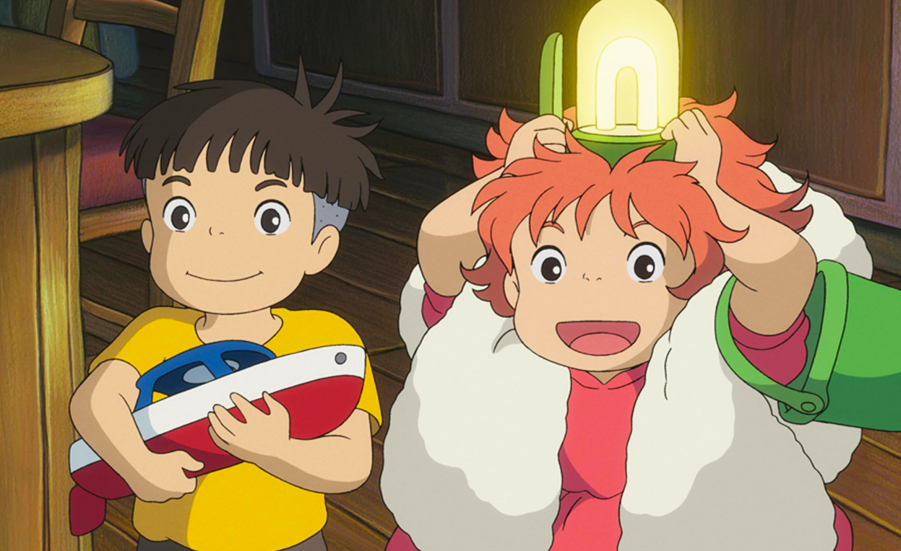

Ponyo: Uma Amizade Veio do Mar
Asian Film Award (2009): Melhor Música Original;
Tokyo Anime Award (2009): Melhor História Original;
Japan Academy Prize(2009): Animação do Ano
Tokyo Anime Award(2009): Melhor Diretor(Hayao Miyazaki);
Entre outros..
Nota(IMDb): 7.6/10;
Nota(AdoroCinema): 4.2/5;
Onde assistir: Netflix
Review
Ponyo: Uma Amizade Veio do Mar é um filme encantador, com uma animação aconchegante e uma trilha sonora
mágica, não é por acaso que o filme ganhou o prêmio de "Melhor Música Original". O diretor Hayao Miyazaki,
um dos criadores do Studio Ghibli, é um dos maiores mestres da animação, com outras obras maravilhosas como
"Castelo Animado" e "O Menino e a Garça". Ele faz um trabalho brilhante mais uma vez, e merece todo o
reconhecimento como um dos melhores diretores de animação do mundo.
A história de Ponyo é linda, focada na amizade e no amor genuíno. A protagonista, Ponyo, é uma princesa
peixe-dourado que ganha a habilidade de se transformar em humana e decide explorar o mundo dos humanos. No
entanto, ao fazer isso, ela acaba causando um desequilíbrio no mundo marinho, ameaçando inundar a Terra. Ao longo do
filme, vemos a jornada de Ponyo e do pequeno Sosuke, que mostra o poder da amizade e a importância de
proteger o equilíbrio natural do mundo. mostrando para nós o quanto o meio ambiente é importante
A animação, com suas cores vibrantes e personagens encantadores, transmite uma mensagem profunda sobre o
amor, a amizade e a conexão com a natureza. Ponyo é um filme que merece ser visto por todos, uma verdadeira
obra de arte que vale cada minuto assistido.